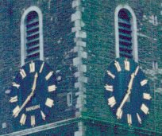
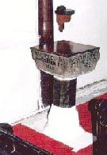

The Clock

The clock, known to Corkonians the world over as
"The Four Faced Liar" on account of the time being slightly different on each
face during the hour.
The reason for this is, the numbers on the faces are made
of wood and gilded, some of the wood is thicker than others and so some hands stick
when they reach these numbers, but on the hour they all come together.
The Fish
The fish is painted in Gold Leaf and is approximately 13 feet in length.
It represents the Lord, in that, in the old days the Lord's name was
signified by the sign of a fish.
It also represents the Salmon Fishing on the local river Lee and in Irish
Mythology the salmon was the "Fish of Knowledge".
Today it is used as a weather vane.
It is called "De Goldie Fish" by Corkonians and people in the Northside live under
"De Goldie Fish".

The Christening Font
Christening Font, dated 1629, is a relic from the Church destroyed in the
siege of Cork in 1690 and bears the inscription,
"Walter Elinton and William Ring made this pant (which was the Anglo-Saxon word for Font)
at their charges".
Within is a pewter bowl dated 1773.